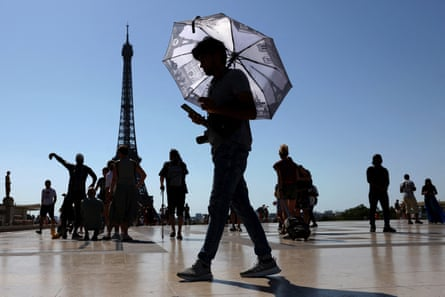
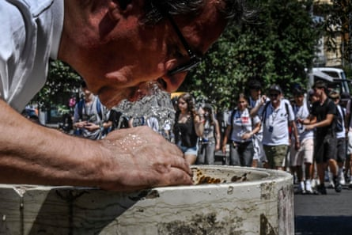
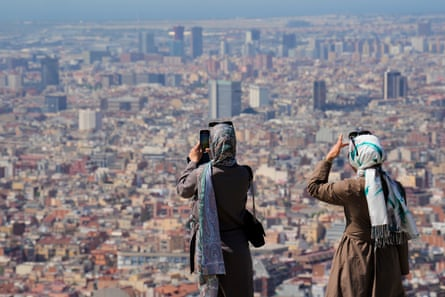

Thirteen Italian regions have banned outdoor working during the hottest parts of the day; June temperature records have been smashed in Spain and Portugal; and schools in parts of France have been closed, as an extreme heatwave continues to grip large swathes of Europe.
Tens of thousands of people have also been evacuated from their homes in Turkey due to wildfires; while the top of the Eiffel Tower was closed to tourists on Tuesday as temperatures in Paris were poised to hit 38C (100.4F).
Lombardy and Emilia-Romagna, two northern Italian industrial hubs, announced on Tuesday that they were stopping open-air work between 12.30pm and 4pm, joining 11 other Italian regions – stretching from Liguria in the north-west to Calabria and Sicily in the south – that have imposed similar bans in recent days.
The top of the Eiffel Tower has been closed to tourists amid the high temperatures in Paris.Photograph: Tom Nicholson/Reuters
Local authorities were heeding advice from trade unions after the death of Brahim Ait El Hajjam, a 47-year-old construction worker, who collapsed and died while working on a construction site close to Bologna, the Emilia-Romagna capital, on Monday.
The CGIL Bologna and Fillea CGIL unions said in a statement: “While we wait to learn the actual cause of death, it is essential, during this terrible period, to promote a culture of safety. The climate emergency has clearly worsened the conditions for those who work outside every day and companies must give absolute priority to the protection of workers.”
The measures vary from region to region but include a halt on outdoor activities on construction sites, quarries and farms during the stipulated hours. Attilio Fontana, the president of Lombardy, said: “Our priority is to protect the health of workers, especially during times like these when the heat becomes particularly unbearable.”
A man drinks from a fountain during hot weather in Naples.Photograph: Ansa/Ciro Fusco/EPA
Vincenzo Colla, councillor for work in Emilia-Romagna, said: “Protecting workers is our responsibility.”
A 53-year-old woman died on Monday after fainting while walking along a street in Palermo, Sicily. She reportedly suffered from a heart condition.
A 70-year-old man was reported to have drowned at a tourist resort close to Turin as intense heat gave way to storms and flash floods.
French national rail operator SNCF said train travel between France and Italy had been suspended for “at least several days” after violent storms on Monday, AFP reported.
Cogne, a town in the Aosta Valley that suffered severe flooding in June last year, has been cut off by a landslide.
Admissions to hospital emergency units in some Italian regions has risen by 15-20% in recent days, with the majority of patients being elderly people suffering from dehydration.
Several Spanish regions, including Barcelona, are on alert for exceptionally high temperatures as the first heatwave of the summer hits the country.Photograph: Alejandro García/EPA
The Spanish state meteorological agency, Aemet, said in a social media update that “June 2025 smashed records” when it comes to high temperature, with an average temperature of 23.6C, 0.8C above the previous hottest June in 2017. The monthly average was also 3.5C higher than the average over the period from 1991 to 2020, it said.
The agency’s comments come just days after Spain’s highest ever June temperature of 46C was recorded in the Huelva province of Andalucía.
In Portugal, temperatures hit 46.6C in Mora, a town in the Évora district, in recent days, making it the highest June temperature ever recorded in the country, according to the Portuguese Institute for the Sea and Atmosphere.
In France, the prime minister, François Bayrou, tried to calm anger at the heatwave crisis in French schools. More than 1,896 schools across the country were fully or partially closed on Tuesday as classrooms proved dangerously hot for children and teachers, amid anger from teaching unions.
In Paris , which was on maximum heatwave alert, parents were advised to keep their children home on Tuesday and Wednesday. Some other towns including Troyes and Melun closed all their schools.
Bayrou said the education ministry would open talks with mayors on how to adapt school buildings, most of which are extremely poorly insulated.
As temperatures rose on Tuesday, some Paris teachers had nothing more than a water spray on their desk to repeatedly spritz children in classrooms in the hope of keeping cool.
Bayrou, who is separately facing a vote of no confidence on Tuesday, which he is expected to survive, has cancelled his meetings to monitor the situation in real time.
Other cities across Europe continent are also experiencing higher than usual temperatures, including Zaragoza (39C), Rome (37C), Madrid (37C), Athens (37C), Brussels (36C), Frankfurt am Main (36C), Tirana (35C) and London (33C).
Turkey’s forestry minister, İbrahim Yumaklı, said firefighters had been called out to 263 wildfires across the country in recent days. Firefighters have also been tackling wildfires in parts of France and Italy , especially on the islands of Sardinia and Sicily.